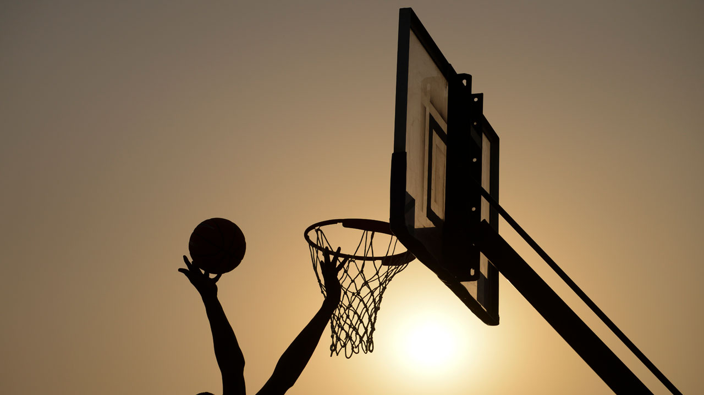

Basketball

basketball, game played between two teams of five players each on a rectangular court, usually indoors. Each team tries to score by tossing the ball through the opponent’s goal, an elevated horizontal hoop and net called a basket.
The only major sport strictly of U.S. origin, basketball was invented by James Naismith (1861–1939) on or about December 1, 1891, at the International Young Men’s Christian Association (YMCA) Training School (now Springfield College), Springfield, Massachusetts, where Naismith was an instructor in physical education.
For that first game of basketball in 1891, Naismith used as goals two half-bushel peach baskets, which gave the sport its name. The students were enthusiastic. After much running and shooting, William R. Chase made a midcourt shot—the only score in that historic contest. Word spread about the newly invented game, and numerous associations wrote Naismith for a copy of the rules, which were published in the January 15, 1892, issue of the Triangle, the YMCA Training School’s campus paper.
While basketball is competitively a winter sport, it is played on a 12-month basis—on summer playgrounds, in municipal, industrial, and church halls, in school yards and family driveways, and in summer camps—often on an informal basis between two or more contestants. Many grammar schools, youth groups, municipal recreation centres, churches, and other organizations conduct basketball programs for youngsters of less than high school age. Jay Archer, of Scranton, Pennsylvania, introduced “biddy” basketball in 1950 for boys and girls under 12 years of age, the court and equipment being adjusted for size.


History
The early years
In the early years the number of players on a team varied according to the number in the class and the size of the playing area. In 1894 teams began to play with five on a side when the playing area was less than 1,800 square feet (167.2 square metres); the number rose to seven when the gymnasium measured from 1,800 to 3,600 square feet (334.5 square metres) and up to nine when the playing area exceeded that. In 1895 the number was occasionally set at five by mutual consent; the rules stipulated five players two years later, and this number has remained ever since.
Since Naismith and five of his original players were Canadians, it is not surprising that Canada was the first country outside the United States to play the game. Basketball was introduced in France in 1893, in England in 1894, in Australia, China, and India soon thereafter, and in Japan in 1900.
While basketball helped swell the membership of YMCAs because of the availability of their gyms, within five years the game was outlawed by various associations because gyms that had been occupied by classes of 50 or 60 members were now monopolized by only 10 to 18 players. The banishment of the game induced many members to terminate their YMCA membership and to hire halls to play the game, thus paving the way to the professionalization of the sport.
Originally, players wore one of three styles of uniforms: knee-length football trousers; jersey tights, as commonly worn by wrestlers; or short padded pants, forerunners of today’s uniforms, plus knee guards. The courts often were of irregular shape with occasional obstructions such as pillars, stairways, or offices that interfered with play. In 1903 it was ruled that all boundary lines must be straight. In 1893 the Narragansett Machinery Co. of Providence, Rhode Island, marketed a hoop of iron with a hammock style of basket. Originally a ladder, then a pole, and finally a chain fastened to the bottom of the net was used to retrieve a ball after a goal had been scored. Nets open at the bottom were adopted in 1912–13. In 1895–96 the points for making a basket (goal, or field goal) were reduced from three to two, and the points for making a free throw (shot uncontested from a line in front of the basket after a foul had been committed) were reduced from three to one.
Baskets were frequently attached to balconies, making it easy for spectators behind a basket to lean over the railings and deflect the ball to favour one side and hinder the other; in 1895 teams were urged to provide a 4-by-6-foot (1.2-by-1.8-metre) screen for the purpose of eliminating interference. Soon after, wooden backboards proved more suitable. Glass backboards were legalized by the professionals in 1908–09 and by colleges in 1909–10. In 1920–21 the backboards were moved 2 feet (0.6 metre), and in 1939–40 4 feet, in from the end lines to reduce frequent stepping out-of-bounds. Fan-shaped backboards were made legal in 1940–41.
A soccer ball (football) was used for the first two years. In 1894 the first basketball was marketed. It was laced, measured close to 32 inches (81 cm), or about 4 inches (10 cm) larger than the soccer ball, in circumference, and weighed less than 20 ounces (567 grams). By 1948–49, when the laceless molded ball was made official, the size had been set at 30 inches (76 cm).
The first college to play the game was either Geneva College (Beaver Falls, Pennsylvania) or the University of Iowa. C.O. Bemis heard about the new sport at Springfield and tried it out with his students at Geneva in 1892. At Iowa, H.F. Kallenberg, who had attended Springfield in 1890, wrote Naismith for a copy of the rules and also presented the game to his students. At Springfield, Kallenberg met Amos Alonzo Stagg, who became athletic director at the new University of Chicago in 1892. The first college basketball game with five on a side was played between the University of Chicago and the University of Iowa in Iowa City on January 18, 1896. The University of Chicago won, 15–12, with neither team using a substitute. Kallenberg refereed that game—a common practice in that era—and some of the spectators took exception to some of his decisions.
The colleges formed their own rules committee in 1905, and by 1913 there were at least five sets of rules: collegiate, YMCA–Amateur Athletic Union, those used by state militia groups, and two varieties of professional rules. Teams often agreed to play under a different set for each half of a game. To establish some measure of uniformity, the colleges, Amateur Athletic Union, and YMCA formed the Joint Rules Committee in 1915. This group was renamed the National Basketball Committee (NBC) of the United States and Canada in 1936 and until 1979 served as the game’s sole amateur rule-making body. In that year, however, the colleges broke away to form their own rules committee, and during the same year the National Federation of State High School Associations likewise assumed the task of establishing separate playing rules for the high schools. The National Collegiate Athletic Association (NCAA) Rules Committee for men is a 12-member board representing all three NCAA divisions. It has six members from Division I schools and three each from Divisions II and III. It has jurisdiction over colleges, junior colleges, the National Association of Intercollegiate Athletics (NAIA), and Armed Forces basketball. There is a similar body for women’s play.
Growth of the game
Basketball grew steadily but slowly in popularity and importance in the United States and internationally in the first three decades after World War II. Interest in the game deepened as a result of television exposure, but with the advent of cable television, especially during the 1980s, the game’s popularity exploded at all levels. Given a timely mix of spectacular players—such as Earvin (“Magic”) Johnson, Julius Erving (“Dr. J”), Larry Bird, and Michael Jordan—and the greatly increased exposure, basketball moved quickly to the forefront of the American sporting scene, alongside such traditional leaders as baseball and football. Four areas of the game developed during this period: U.S. high school and college basketball, professional basketball, women’s basketball, and international basketball.
The rules of basketball can vary slightly depending on the level of play (for example professional rules differ from college rules) or where the game is played (international rules are different from USA professional rules). These rule differences, however, are usually just variations on the basic game of basketball and the majority of the rules discussed below can be applied to most any game of basketball played. The winner of a basketball game is the team with the most points. You get points by throwing the basketball through the opponent's hoop or basket. In regular play a basket made from within the three point line is worth 2 points and a basket shot from outside the three point line is worth three points. When shooting a free throw, each free throw is worth 1 point.
Rules for the offense
The basketball team on offense is the team with the basketball. When a player has the basketball there are certain rules they must follow:
1) The player must bounce, or dribble, the ball with one hand while moving both feet. If, at any time, both hands touch the ball or the player stops dribbling, the player must only move one foot. The foot that is stationary is called the pivot foot.
2) The basketball player can only take one turn at dribbling. In other words, once a player has stopped dribbling they cannot start another dribble. A player who starts dribbling again is called for a double-dribbling violation and looses the basketball to the other team. A player can only start another dribble after another player from either team touches or gains control of the basketball. This is usually after a shot or pass.
3) The ball must stay in bounds. If the offensive team looses the ball out of bounds the other team gets control of the basketball.
4) The players hand must be on top of the ball while dribbling. If they touch the bottom of the basketball while dribbling and continue to dribble this is called carrying the ball and the player will lose the ball to the other team.
5) Once the offensive team crosses half court, they may not go back into the backcourt. This is called a backcourt violation. If the defensive team knocks the ball into the backcourt, then the offensive team can recover the ball legally.
Defensive Rules
The team on defense is the team without the basketball.
1) The main rule for the defensive player is not to foul. A foul is described as gaining an unfair advantage through physical contact. There is some interpretation that has to be made by the referee, but, in general, the defensive player may not touch the offensive player in a way that causes the offensive player to lose the ball or miss a shot.
Rules for everyone
1) Although the foul rule is described above as a defensive rule, it applies exactly the same to all players on the court including offensive players.
2) Basketball players cannot kick the ball or hit it with their fist.
3) No player can touch the basketball while it is traveling downward towards the basket or if it is on the rim. This is called goaltending. (touching the ball on the rim is legal in some games).
Every player on the court is subject to the same rules regardless of the position they play. The positions in basketball are just for team basketball strategy and there are no positions in the rules.
Basketball Court